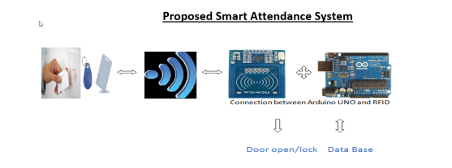
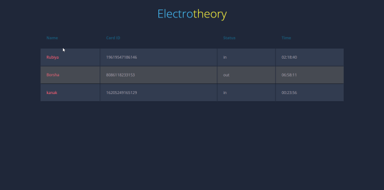
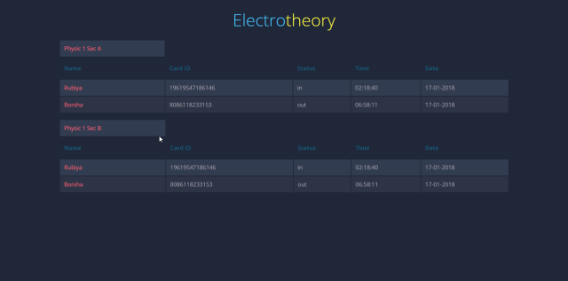

ABOUT THE PROJECT
This is a server based RFID based attendence project, an admin can controll all the card holders, and can check current status
As technology has advanced, integrating the monitoring system with an automation technology will provides more convenient way monitoring the student. The radio frequency identification (RFID) technology is one of an automation technology that is beneficial in improving current traditional way of monitoring student. As every tag has its own unique ID, it is easy to differentiate every tag holder.
Here the purpose of RFID system for identifying and monitoring attendance System. In this system, the RFID tags enable the university management people to supervise the student movement in and out of the campus. When the RFID tags pass through the RFID reader in read range zone, then system will record the data from the RFID tags to the database system.

MADE FOR
Small offices, School, and Secured places.

